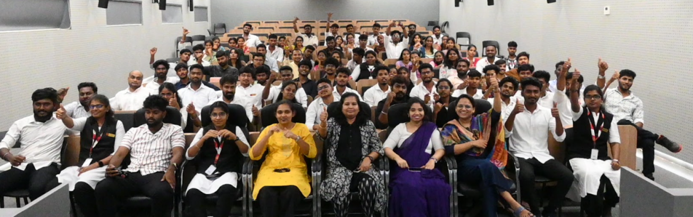
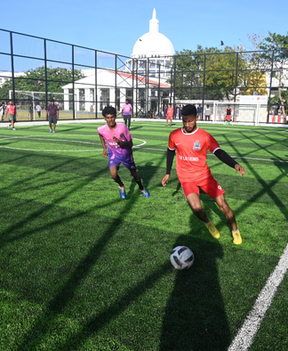
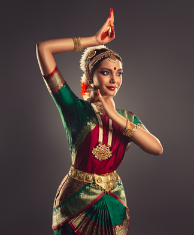
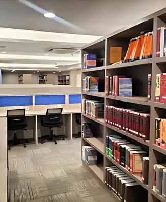
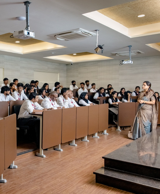
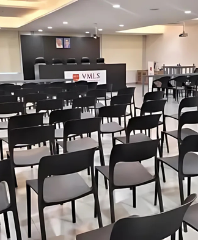

Home Student Affairs

Student life at VMLS is vibrant, diverse, and engaging — shaped largely by the active participation of students in various clubs. These clubs serve as dynamic platforms for co-curricular and extra-curricular development, promoting teamwork, leadership, creativity, and advocacy. With seven student convenors leading the way, the clubs are student-driven and faculty-supported, ensuring a balanced environment of guidance and autonomy. Whether you're inclined towards performing arts, intellectual debates, film appreciation, or legal simulation, there's something for everyone at VMLS.

The Sports Club at VMLS is all about action, adrenaline, and team spirit. Whether it’s cricket, football, athletics, or indoor games, the club gives students a chance to stay active, compete, and bond through sports. It plays a major role in organizing inter-house tournaments, fitness challenges, and the Annual Sports Meet. It’s not just about winning — it’s about playing together and growing stronger as a community.

From music to dance and theatre to festive celebrations, the Cultural Club is the pulse of VMLS's vibrant student life. It curates some of the most exciting performances and cultural showcases during events like VMLS Fest, Onam, and Diwali. The club is where artistic expression meets celebration, giving students the stage to shine and represent their heritage and creativity.

The Literary Club at VMLS is the voice of reason, wit, and imagination. Students here dive into debates, quizzes, open mics, and creative writing. The club is a space for those who love words — whether it’s delivering a persuasive argument or weaving a poem. It sharpens communication skills and builds confidence to speak, write, and lead with clarity.
Lights, camera, conversation! The Movie Club is where VMLS students explore cinema beyond entertainment. With screenings, post-film discussions, and themed movie nights, the club connects students to storytelling, visual art, and social issues through the lens of film. It’s the perfect club for movie buffs who love to discuss what happens beyond the screen.
The Fine Arts Club is where imagination finds form — be it through painting, sketching, doodling, or installations. From decorating for campus events to hosting art exhibitions and workshops, the club allows students to express themselves visually and bring life to the walls and spaces of VMLS. It’s a community of artists who use color, shape, and style to speak louder than words.

The ADR Club offers students hands-on exposure to negotiation, mediation, and arbitration — key components of modern legal practice. Through mock sessions, guest lectures, and workshops, the club nurtures communication, diplomacy, and solution-oriented thinking. It’s perfect for students passionate about resolving conflicts through dialogue, not dispute.

The Moot Court Club is the training ground for VMLS’s future litigators. It provides students with a platform to master legal research, drafting, and courtroom advocacy through simulated court proceedings. From internal selections to national competitions, this club builds confidence and sharpens the legal instincts of aspiring advocates.
The Social Media Club at VMLS is the creative force behind the school’s digital presence. Students capture campus life, create engaging content, and connect the VMLS community online—gaining hands-on experience in storytelling, branding, and digital media.